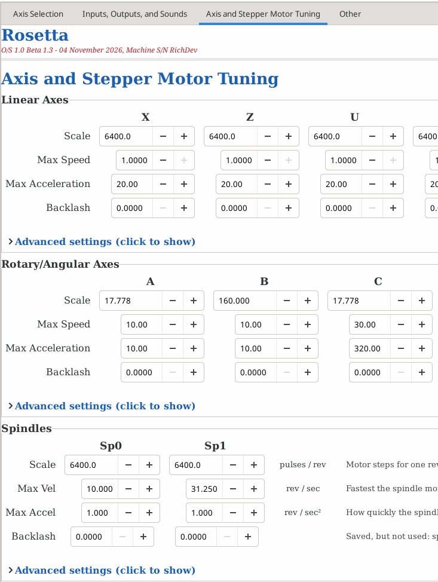
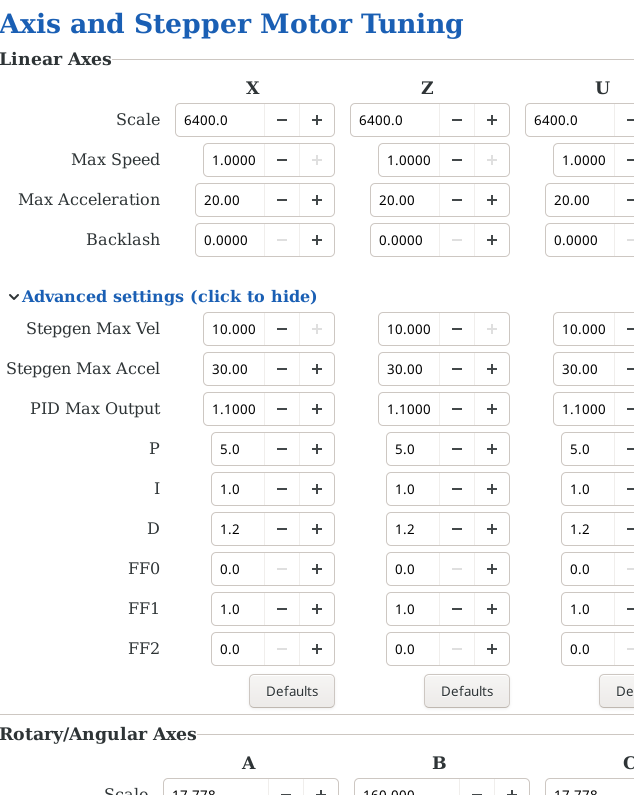

Key Note: The configuration program cannot be run when the Rosetta program is running. It is designed so that you configure the way Rosetta works, then run the system.
Basic Settings

Axis and Stepper Motor Tuning
This page has three groups: Linear axes (X, Z, U, V, W), Rotary/Angular axes (A, B, C), and Spindles (Sp0, Sp1). Each axis has its own column, and each setting has its own row. The column to the right of each row explains that row.
There are fields for every axis, including the ones not currently being used. Only the values for the axes being used make any difference.
Each group shows these rows:
| Row | Linear and Rotary/ | Spindles |
| Scale | Yes | Yes |
| Max Speed / Max Vel | Max Speed | Max Vel |
| Max Acceleration / Max Accel | Max Acceleration | Max Accel |
| Backlash | Yes | Yes |
Scale
This is the number of pulses Rosetta sends to the stepper drive to move the axis one unit: one inch (or mm) for a linear axis, one degree for a rotary/angular axis, and one revolution for a spindle. For example, in the screen to the right, 57,600 pulses are needed for the Sp0 spindle to turn 360°.
| Scale = microsteps per motor turn (set by the switches on the stepper drive) × motor turns per unit (from the gearing and the leadscrew) |
Rosetta's stepper drives are normally set to 6,400 microsteps per motor turn. To work out the Scale for each axis and check it by measuring, see Scale Settings for a Device.
- If the axis moves the wrong way, change the sign of the Scale (+ to -, or - to +).
Microsteps and Max Speed
Rosetta can send at most 200,000 pulses a second to each stepper drive (the pulse timing the drives need). So the bigger the Scale, the slower the axis's fastest speed:
| Rosetta’s fastest speed = 200,000 ÷ Scale |
| Example | Scale | Fastest speed |
| X: 6,400 microsteps, 6 : 1 pulleys, 10 turns per inch | 384,000 per inch | 0.52 inch / second |
| The same X with the drive set to 3,200 microsteps | 192,000 per inch | 1.04 inch / second |
| Sp0: 6,400 microsteps, 9 : 1 pulleys | 57,600 per revolution | 3.47 revolutions / second (208 rpm) |
If an axis's Max Speed is more than this, the warnings line (see below) says Max Speed is more than the step timing allows at this Scale. Either lower Max Speed, or set the drive to fewer microsteps (half the microsteps = half the Scale = twice the fastest speed) and change the Scale to match.
- Do not change the microstep switches on a stepper drive without changing that axis's Scale to match. If you do, every move on that axis is the wrong size - half, or double, what you asked for.
The microstep switches are SW5 - SW8 on each stepper drive. The setting for each number of microsteps is on page 6 of the User Manual for the DM542T - see also Switch Settings on the DM542Ts.
Note: Fewer microsteps let an axis go faster, but it moves less smoothly at slow speeds. For most rose engine work - slow, smooth movement - leave the drives as they were set up. If an axis needs to go faster, use the Microstep Calculator to choose the setting and the Scale to match. The motor itself can also run out of torque at high speed, before this limit is reached. To understand why, see Stepper Motor: Microstepping and Speed in the Ornamental Turning Book of Knowledge.
Max Speed
This is the fastest the axis may move - in a program, an MDI command, or a jog. It is measured in distance per second: inches (or mm) per second for a linear axis, and degrees per second for a rotary/angular axis. For example, 30 degrees / second = 5 revolutions per minute.
- The Max Speed of a linear axis cannot be set above 1 inch / second (25.4 mm / second).
- For the spindles, this row is called Max Vel, and it is measured in revolutions per second. For example, 0.167 revolutions / second = 10 revolutions per minute.
Note: When you change Max Speed, the advanced settings worked out from it (Stepgen Max Vel and PID Max Output - see below) change with it, so you do not need to open the advanced settings (unless you want to do so).
Max Acceleration
This is how quickly the axis may speed up and slow down. It is measured in distance per second2: inches (or mm) per second2 for a linear axis, and degrees per second2 for a rotary/angular axis. For the spindles, this row is called Max Accel, and it is measured in revolutions per second2.
A program made up of many short moves (such as a rosette pattern on C) finishes sooner with a higher Max Acceleration, because each short move spends most of its time speeding up and slowing down.
Note: When you change Max Acceleration, Stepgen Max Accel (see below) changes with it.
Backlash
Backlash is the slack in an axis's drive - play in the leadscrew, nut, gears or belt - which is taken up each time the axis changes direction, before the axis really moves. Rosetta makes up for it: each time the axis reverses, it first moves the motor this much further.
Enter the axis's lost motion, measured with a dial indicator (see Set the Backlash First for how). 0 turns it off. A little less than the measured value is better than too much, which makes the axis jump each time it reverses.
Note: Backlash is saved as soon as you change it. For more on backlash, and what compensation can't fix, see Backlash in the Ornamental Turning Book of Knowledge.
The warnings line
Just under the Backlash row, each group has a line which is usually empty. If a value does not fit with another, a warning appears there in orange, naming the axis - for example:
| C: Stepgen Max Accel is below 1.5 x Max Acceleration |
The warnings are:
- Max Speed is more than the step timing allows at this Scale - the stepper drive cannot be sent pulses fast enough for that speed. Lower Max Speed (or, for a spindle, Max Vel).
- Stepgen Max Vel is below Max Speed, Stepgen Max Accel is below 1.5 x Max Acceleration, or PID Max Output is below Max Speed - an advanced setting is too low. The easiest fix is the axis's Restore Defaults button (see below).
- Indexing Max Output is above Max Vel (spindles only) - lower Indexing Max Output, or click the spindle's Restore Defaults button.
Note: A warning does not stop you saving the values. It tells you that LinuxCNC may stop with an error, or that the axis may not reach its Max Speed.
Advanced Settings

Advanced Settings
Each group has an Advanced settings twistie below the warnings line. It starts closed. Click it to show the advanced settings, and click it again to hide them. An example is shown to the right for the Linear axes.
Most people never need to change these. Each is explained in the column to the right of its row.
Linear and Rotary/Angular axes
| Row | What it is | Normally |
| Stepgen Max Vel | The step generator's own speed limit. Keep it at or above Max Speed. | 1.25 x Max Speed |
| Stepgen Max Accel | The step generator's own acceleration limit. Keep it at least 1.5 x Max Acceleration. | 2 x Max Acceleration |
| PID Max Output | The fastest the position loop may command. Keep it at or above Max Speed. | 1.1 x Max Speed |
| P, I, D, FF0, FF1, FF2 | The position loop's PID gains. | |
| Restore Defaults | A button for each axis - see below. |
Spindles
The spindles' advanced settings are for indexing (turning the spindle to a set angle):
| Row | What it is |
| Indexing Max Output | The fastest the spindle turns while indexing. Keep it at or below Max Vel. |
| P, I, D | The indexing loop's PID gains. |
| Restore Defaults | A button for each spindle - see below. |
Restore Defaults
Each axis and each spindle has a Restore Defaults button at the bottom of its column. It puts that axis's advanced settings back to their normal values: Stepgen Max Vel, Stepgen Max Accel and PID Max Output are worked out again from the axis's own Max Speed and Max Acceleration, and the PID gains go back to Rosetta's starting values. (For a spindle: Indexing Max Output and the indexing PID gains.)
Restore Defaults does not change Scale, Max Speed, Max Acceleration or Backlash.
- Do not forget to click Save All Settings after Restore Defaults. Like the other values on this page, the restored values are only kept when you click Save All Settings.
Notes:
- More information is available at:
- LinuxCNC PID Component Reference
- PID Controller (Wikipedia)
- User Manual for the DM542T (the stepper drives) - its switch settings for microsteps and motor current are on page 6
- Every value on this page except Backlash is saved when you click Save All Settings (on the Axis Selection tab, or in the File menu). If you close the Settings program with changes that haven't been saved, it asks whether to save them first. Backlash is saved as soon as you change it. See Saving and Sharing Settings.
- Changes take effect the next time LinuxCNC starts.
- This page is bigger than the screen. Scroll with the mouse wheel, or use the bar on the right side of the page.